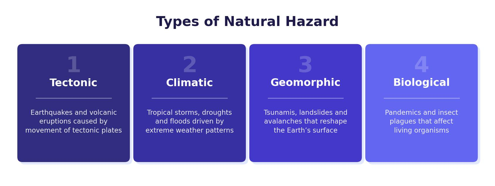

What Is a Natural Hazard?
A natural hazard is a natural event that threatens people and property. Not every natural event is a hazard — a volcanic eruption on a remote, uninhabited island is simply a natural event. It only becomes a hazard when it has the potential to cause death, injury, damage or economic loss.
Natural hazards are grouped into two main types: tectonic hazards (earthquakes and volcanoes, caused by movement of the Earth’s crust) and weather hazards (tropical storms, floods, droughts, heatwaves, caused by atmospheric conditions).

Factors Affecting Hazard Risk
Three main factors determine how dangerous a natural hazard is:
- Scale of the hazard — a magnitude 9 earthquake poses far greater risk than a magnitude 1 earthquake. A Category 5 tropical storm is more destructive than a Category 1.
- Wealth of the country — wealthier countries can afford stronger buildings, better warning systems, trained emergency services and medical support. Poorer countries have fewer resources to prepare or respond.
- Population size and proximity — the more people living near a hazard, the greater the risk. As the world’s population grows and more land is inhabited, more people are exposed to natural hazards.
The Structure of the Earth
To understand tectonic hazards, you need to know how the Earth is built. The Earth has four main layers:
- Inner core — solid metal at the very centre, extremely hot (around 6,000°C) and under immense pressure.
- Outer core — liquid metal surrounding the inner core. Its movement generates the Earth’s magnetic field.
- Mantle — a thick layer of semi-liquid rock (magma) that can flow very slowly. Convection currents in the mantle drive plate movement.
- Crust — the thin, solid outer layer we live on. It makes up just 1% of the Earth’s volume.
Two Types of Crust
The crust is not one solid piece. It is broken into large slabs called tectonic plates, and these plates are made of two different types of crust:
Continental crust is 20–200 km thick, less dense, very old (up to 3.8 billion years) and made mainly of granite. It is not destroyed at plate boundaries. Oceanic crust is much thinner (5–10 km), denser, younger (usually less than 200 million years old) and made mainly of basalt. Because it is denser, oceanic crust sinks beneath continental crust when they collide, and it is recycled back into the mantle at destructive plate margins.
Plate Tectonics Theory
Plate tectonics theory explains that the Earth’s crust is divided into large plates that move slowly over time. Scientists have strong evidence for this:
- Volcanoes — if the crust were one solid piece, magma could not escape to the surface. The existence of volcanoes proves the crust is broken.
- Pattern of hazards — earthquakes and volcanoes occur in clear lines along plate boundaries, not randomly. This linear pattern shows where the edges of the plates are.
- GPS measurements — satellites track the movement of the plates in real time, measuring shifts of a few centimetres per year.
What Makes the Plates Move?
The most widely accepted explanation is convection theory. The Earth’s core reaches temperatures of around 6,000°C. This intense heat causes magma in the mantle to rise towards the crust. As it rises, it cools and sinks back towards the core. This creates circular convection currents that flow through the mantle, and the pressure and movement of these currents drags the tectonic plates along with them.
Tectonic plates move very slowly — typically just a few centimetres per year. This movement is far too slow to see or feel, but over millions of years it reshapes continents and ocean basins.
Distribution of Tectonic Hazards
Earthquakes and volcanoes are not spread randomly across the globe. They follow a clear pattern:
- Most occur in lines along plate boundaries, especially where plates meet along coastlines of continental landmasses.
- The Pacific Ring of Fire is the most active zone — a horseshoe-shaped belt around the Pacific Ocean where around 75% of the world’s volcanoes and 90% of earthquakes are found.
- Some hazards occur away from plate boundaries. The Yellowstone supervolcano (USA) and Kilauea (Hawaii) sit in the middle of a tectonic plate, above hotspots where magma rises from deep in the mantle.
The UK has very few earthquakes and no active volcanoes because it sits in the middle of the Eurasian Plate, far from any plate boundary. Countries on plate boundaries — like Japan, Indonesia and Chile — experience frequent tectonic hazards.